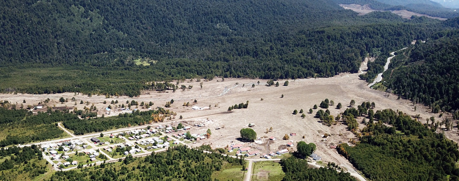
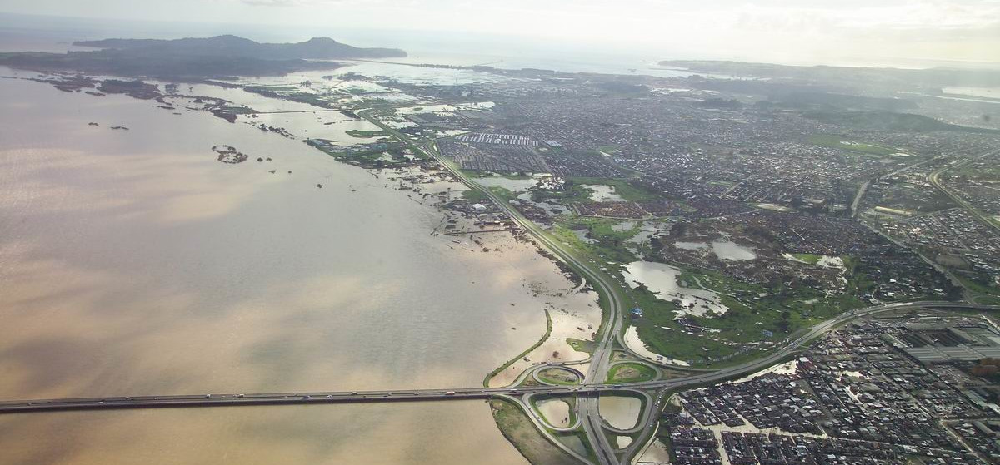

Videos interesantes
Mates Mike: El Problema de los Tres Cuerpos, una Visualización del CAOS del Cosmos.
Veritasium: El Extraño Comportamiento de los Objetos en Rotación.
Date un vlog: El Problema de los 3 Cuerpos: El Origen de la Serie de Netflix.
Modelamiento matemático
Modelo depredador-presa (Lotka–Volterra)
Las siguientes ecuaciones describen la dinámica de un sistema biológico en el cual dos especies interacúan, una como presa y la otra como depredador. Las ecuaciones de Lotka-Volterra, con capacidad de carga del ambiente ($k$) vienen dadas por:
\[ \begin{align*} \frac{dP}{dt}&=r_1 P \left(1-\frac{P}{k}\right)-a_1PD\\ \frac{dD}{d t}&=a_2 PD - r_2D, \end{align*} \]
donde $r_1, r_2, a_1, a_2$ son parámetros (positivos) que representan las interacciones de las dos especies.
Ejemplo del modelo presentado con condición inicial $P(0) = 2000$ conejos, $D(0) = 10$ lobos y capacidad de carga $k=10000$ conejos.
Ecuaciones de aguas someras (Shallow water equations)
En la actualidad, científicos de todo el mundo intentan continuamente utilizar métodos numéricos para predecir la evolución de eventos geofísicos e industriales de alto impacto social, ambiental y económico. En particular, Chile es un país que constantemente ha sido afectado por tsunamis, deslizamientos de tierra e inundaciones que han dejado bajo el agua y lodo ciudades enteras.

La caracterización y estudio de estos fenómenos implica la modelización matemática y númerica de ecuaciones diferenciales parciales (EDPs) complejas y disponer de herramientas que permitan hacer simulaciones numéricas de estos eventos nos permitiría estar un paso delante de la ocurrencia de estos, así como también, tomar decisiones que permitan minimizar el impacto ambiental y social en caso de que se produzcan inevitablemente.
Desde el punto de vista físico-matemático, flujos viscosos como agua o aire se modelan mediante las ecuaciones de aguas someras (shallow water). En el caso de un fondo plano (horizontal), con fuerzas de Coriolis, fuerzas de fricción y viscosas despreciables, las ecuaciones de aguas poco profundas vienen dadas por:
\[ \begin{align*} \frac{\partial (\rho \eta)}{\partial t}+\frac{\partial (\rho \eta u)}{\partial x}+\frac{\partial (\rho \eta v)}{\partial y}&=0,\\ \frac{\partial (\rho \eta u)}{\partial t}+\frac{\partial}{\partial x}\left(\rho \eta u^2+\frac{1}{2}\rho g \eta^2\right) +\frac{\partial (\rho \eta u v)}{\partial y}&=0,\\ \frac{\partial (\rho \eta v)}{\partial t}+\frac{\partial (\rho \eta u v)}{\partial x}+ \frac{\partial}{\partial y}\left(\rho \eta v^2+\frac{1}{2}\rho g \eta^2\right)&=0,\\ \end{align*} \]
$\eta$ es la altura total de la columna de fluido (profundidad instantánea del fluido en función de $x$, $y$ y $t$), y el vector 2D $(u,v)$ es el campo de velocidad horizontal del fluido. Además, $g$ es la aceleración de la gravedad y $\rho$ es la densidad del fluido.
Importancia:
- Simulación del rompimiento de represas.
- Predicción de zonas de innundación.
- Predicción y simulación de tsunamis en zonas costeras.
- Simulación de avalanchas y aluviones.
- Evolución de lava tras una erupción volcánica.

Oscilaciones amortiguadas de un péndulo simple
Un movimiento de tipo armónico simple, sin roce está regido por la siguiente ecuación diferencial ordinaria: \[\frac{d^2x}{dt^2}+\omega_0^2x=0, \tag{1} \] donde $x$ representa la elongación o desplazamiento respecto al punto de equilibrio, $\omega_0=\sqrt{g/l}$ es la frecuencia natural de las oscilaciones armónicas. La solución de la ecuación (1), viene dada por: \[x(t) = A\sin(\omega_0t+\psi). \] Donde $A$, es la amplitud del movimiento, $\omega_0$ es la frecuencia angular, $\psi$ es la fase inicial e indica el estado de oscilación o vibración (o fase) en el instante de tiempo $t = 0$ de la partícula que oscila.
Péndulo simple con fricción: La fuerza de amortiguamiento por fricción de la velocidad del cuerpo oscilante, un tipo de fuerza retardadora muy común, y actúa en la dirección opuesta a la velocidad. En el caso del péndulo, esta fuerza es directamente proporcional a la velocidad, por lo que lo expresamos como $f_r=-b v_t$. Así, las ecuaciones que describen las Oscilaciones amortiguadas de un péndulo simple vienen dadas por: \[\frac{d^2x}{dt^2}+\frac{b}{m}\frac{dx}{dt}+\frac{g}{l}x=0,\quad(\text{pequeñas oscilaciones.}) \] La solución de la ecuación del movimiento viene dada por: \[ x(t)=x_0e^{-\gamma t}\cos(\omega t + \psi_0), \] con $\gamma=b/2m$, $w=\sqrt{\omega_0^2-\gamma^2}$.